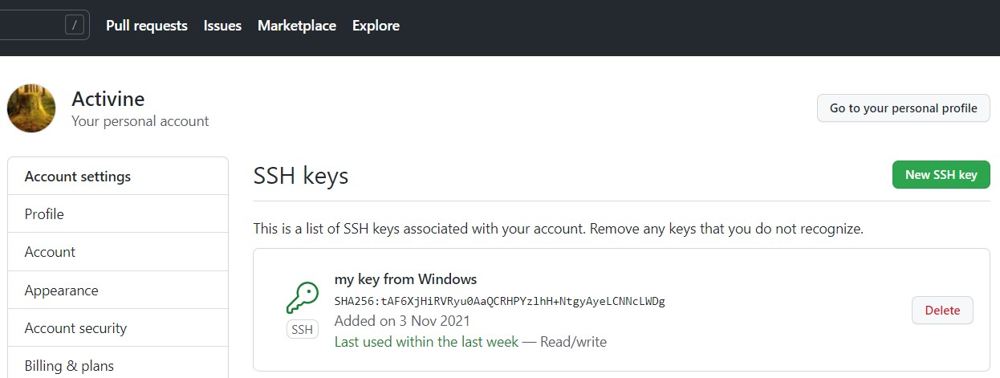

Перелік основних команд
- git config --global user.name Activine - указывает ваше имя.
- git config --global user.email activinegativ@gmail.com - указывает адрес электронной почты.
- git init - команда создаёт в текущем каталоге новый подкаталог с именем .git, содержащий все необходимые файлы репозитория — структуру Git репозитория.
- git status - команда отображает состояние рабочего каталога и раздела проиндексированных файлов. С ее помощью можно проверить индексацию изменений и увидеть файлы, которые не отслеживаются Git.
- git add - команда добавляет содержимое рабочего каталога в индекс (staging area) для последующего коммита.
- git commit - команда для записи индексированных изменений в репозиторий.
- git log - команда перечисляет коммиты, сделанные в репозитории в обратном к хронологическому порядке — последние коммиты находятся вверху.
- git checkout - команда позволяет перемещаться между ветками, созданными командой git branch.
- git branch - команда для управления ветками в репозитории Git.
- git push - используется для публикации выгружаемых локальных изменений в центральном репозитории.
- git pull - команда для извлечения и загрузки содержимого из удаленного репозитория и немедленного обновления локального репозитория этим содержимым.
- git merge - команда объединяет несколько последовательностей коммитов в общую историю.
- git clone - команда для выбора существующего репозитория и создания его клона.
Написати що таке .gitignore файл
приховує файли та папки від систем контроля Git
Advanced
- git revert - откатывает коммит путём создания нового, изменения в котором обратны тому коммиту, который нужно отменить.
- git reset - команда для отмены локальных изменений в репозитории Git.
- git rebase - один из двух способов объединить изменения, сделанные в одной ветке, с другой веткой.
- git cherry-pick - команда используется для перенесения отдельных коммитов из одного места репозитория в другое.
- git stash - команда прячет изменения в файлах и сохраняет эти изменения отдельно, чтобы потом можно было их вернуть.
Підключити github через SSH
